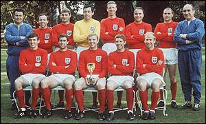
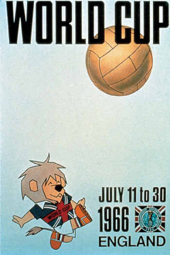
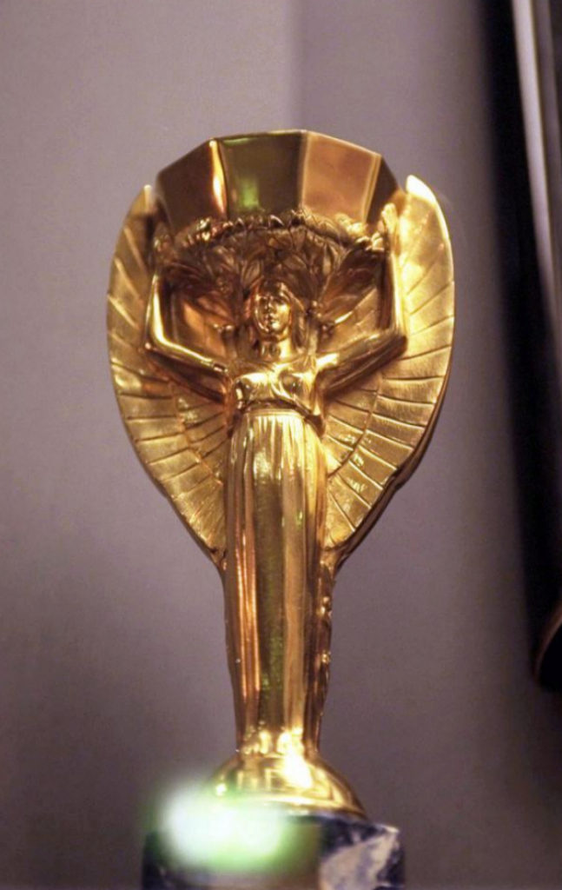
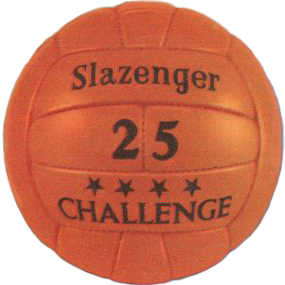

Selección Campeona del Mundo

Poster oficial del Mundial de Inglaterra 1966

Trofeo del Mundial de Inglaterra 1966
Es el mismo del Mundial de Chile 1962

Álbum de cromos del Mundial de Inglaterra 1966

Balón oficial del Mundial de Inglaterra 1966
